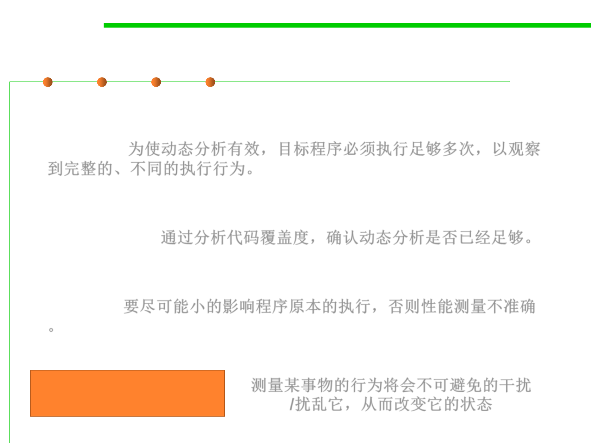

8.2 Dynamic Program Analysis Methods and Tools
Dynamic Program Analysis
▪ For dynamic program analysis to be effective, the target program
must be executed with sufficient test inputs to produce interesting
behavior. 为使动态分析有效，目标程序必须执行足够多次，以观察
到完整的、不同的执行行为。
▪ Use of software testing measures such as code coverage helps ensure
that an adequate slice of the program‘s set of possible behaviors has
been observed. 通过分析代码覆盖度，确认动态分析是否已经足够。
▪ Also, care must be taken to minimize the effect that instrumentation
has on the execution (including temporal properties) of the target
program. 要尽可能小的影响程序原本的执行，否则性能测量不准确
。
Uncertainty principle
测量某事物的行为将会不可避免的干扰
量子力学中的测不准原理
/扰乱它，从而改变它的状态